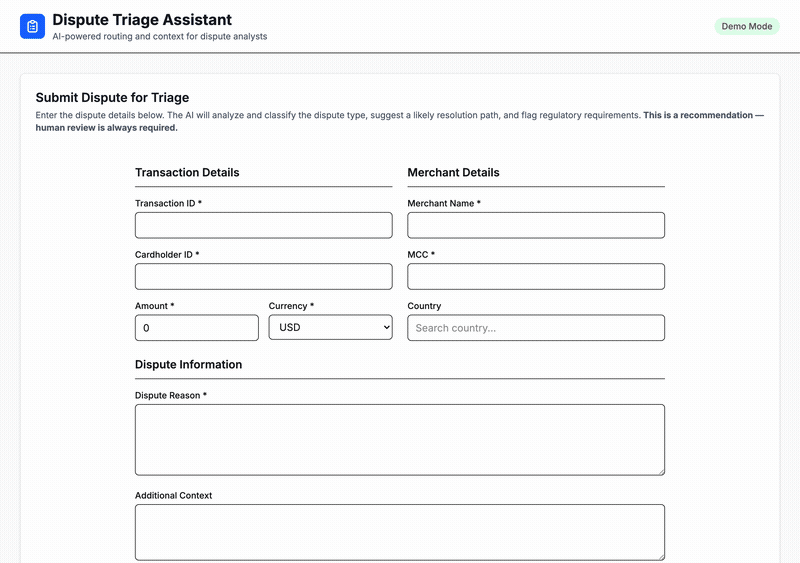
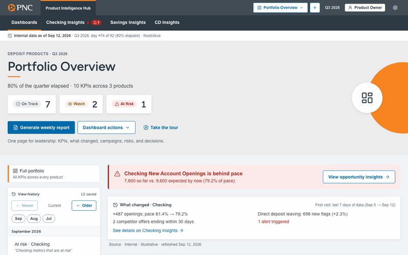

Products I've built — from problem to shipped solution
Each case study shows the user problem, my product approach, and a measurable outcome. The first is a product I shipped as an engineer at Visa; the next three are self-directed AI products built solo for this portfolio; the last is a team build for a case competition.
V-ARM · Visa's B2B virtual card payments platform
V-ARM — B2B Virtual Card Payments
Commercial Money Movement Solutions · translated product requirements into the integration contracts and APIs that launched V-ARM.
Launching a B2B virtual card platform meant turning ambiguous product requirements into integration contracts and APIs that issuers, processors, and engineering could build against — while two separate schedule risks threatened the launch date.
Flagged a 20% throughput loss early enough to ship a phased MVP on time, then recovered a one-month security delay by restructuring sequential work into parallel execution across Engineering and Cybersecurity. Later rebuilt localization as a configuration-driven framework to unlock the European launch.
$17.8M in first-month virtual card volume · on-time launch despite two schedule risks · new markets with zero code changes

PRD Quality Reviewer
Scores a pasted PRD against the SMART framework with section-level reasoning and suggestions.
Product managers spent 2 hours reviewing each requirements document for clarity, completeness, and edge cases.
Built an AI pipeline using the Gemini API to score PRDs across 5 SMART dimensions with per-criterion feedback and improvement suggestions.
2 hours → 2 minutes · 60x faster · clear, actionable per-section feedback

Payment Instruction Parser
Extracts structured payment data from messy .txt and .eml emails with confidence scores.
Finance teams receive payment instructions through messy email threads, forwarded invoices, and informal reminders — manual extraction risks missing due dates, vendors, or payment methods.
Built a finance tool that accepts email uploads, extracts structured payment instructions via LLM structured outputs, and stores results in PostgreSQL for review and audit.
Reduces manual data entry · handles multiple payments per email · audit-ready extraction history

B2B Payments Dispute Classifier
Triage assistant for bank dispute analysts — AI that recommends, never decides alone.
Dispute analysts spend 15–30 minutes per case reading unstructured dispute text and cross-referencing resolution playbooks — roughly $125K/month in analyst time for a mid-size bank, with inconsistent outcomes across analysts.
Built an AI triage assistant that classifies disputes, suggests a resolution path, and flags regulatory requirements in seconds — using confidence-tiered routing (HIGH/MEDIUM/LOW) so low-confidence or contradictory cases are automatically blocked from automation and routed to mandatory human review.
15–30 min → seconds per case · AI as assistant, not decision-maker · full audit trail for compliance

Product Intelligence Hub
2026 Tepper Tech Innovation Challenge (CMU), sponsored by PNC · an AI decision-support tool for the Product Owners who run PNC's consumer deposit products.
PNC asked MBA teams to design an AI-powered Product Ownership framework. Its deposit Product Owners must balance growth, risk, and compliance, with data spread across many systems. A PO tracking Checking, Savings, and CD KPIs can see a number is low, but not whether it's behind pace, by how much, or which customers could close the gap.
Wrote the product spec and scaffolded the app around one shared data model, so every page derives status, gap, and opportunity from the same numbers. Built the Portfolio Overview: pace-based status, a prompt bar that turns plain-English questions into focused dashboards, and saved views. A teammate built the per-product opportunity pages on top.
Live demo on GitHub Pages · at-risk KPI flagged from pace (79.2% of expected) · segments sized from history, not guesses